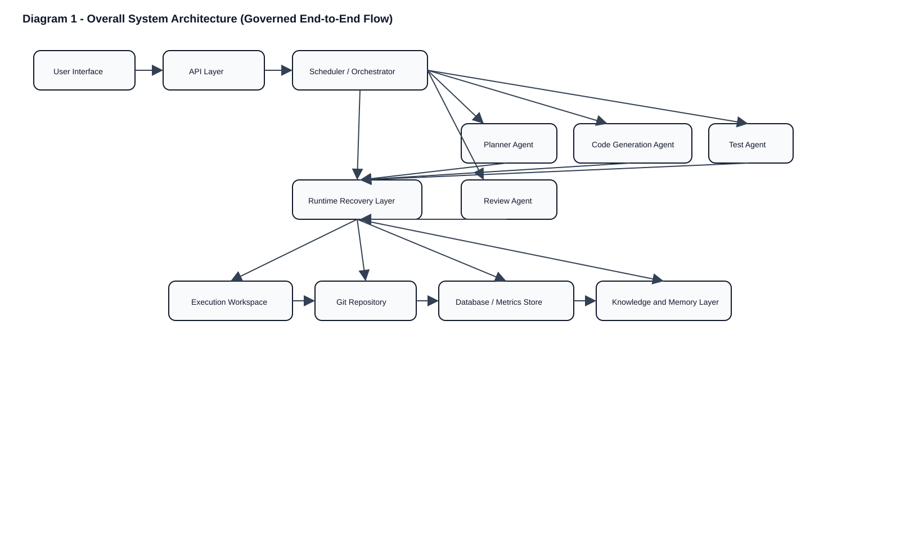
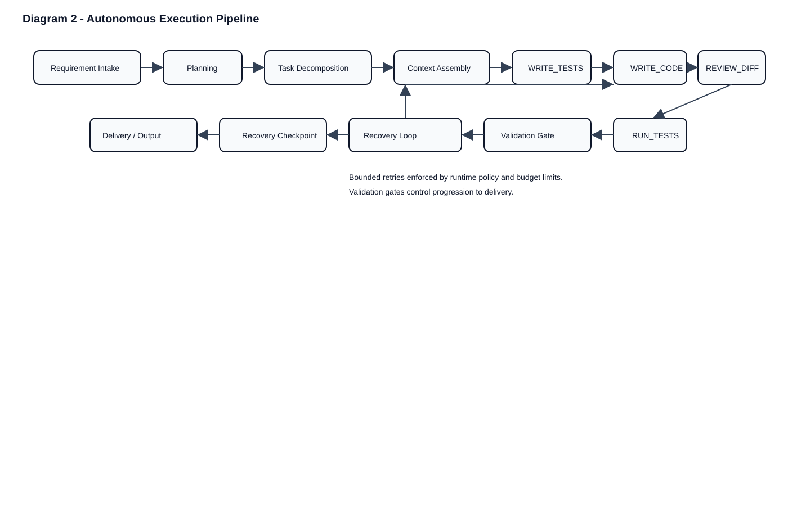
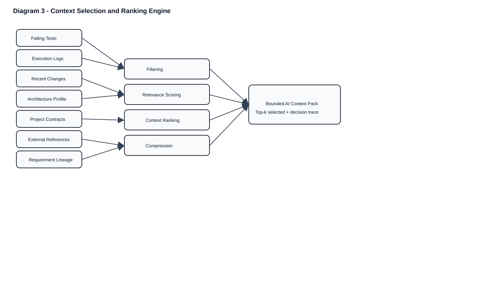
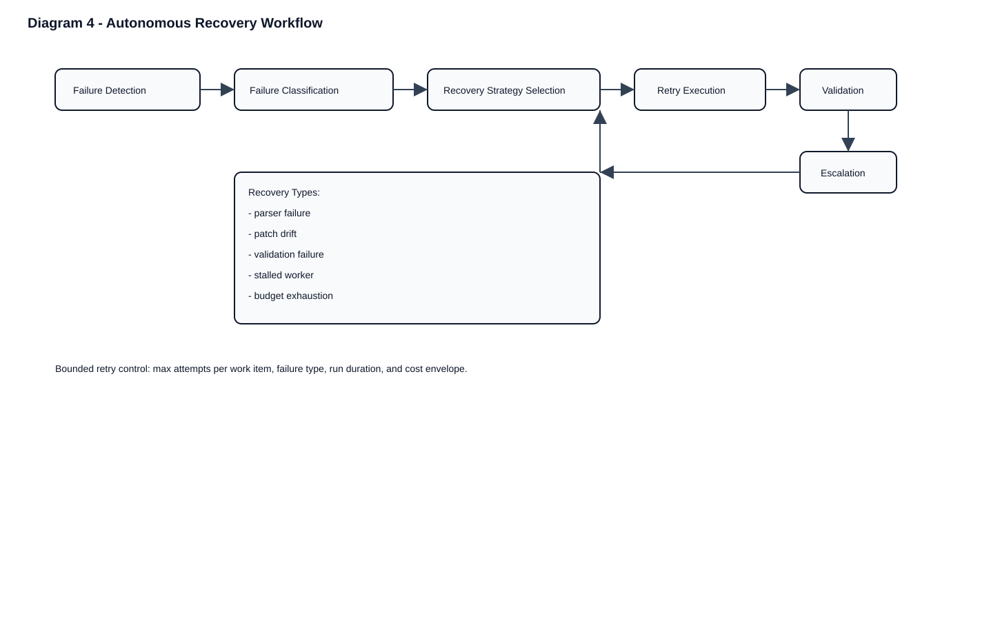
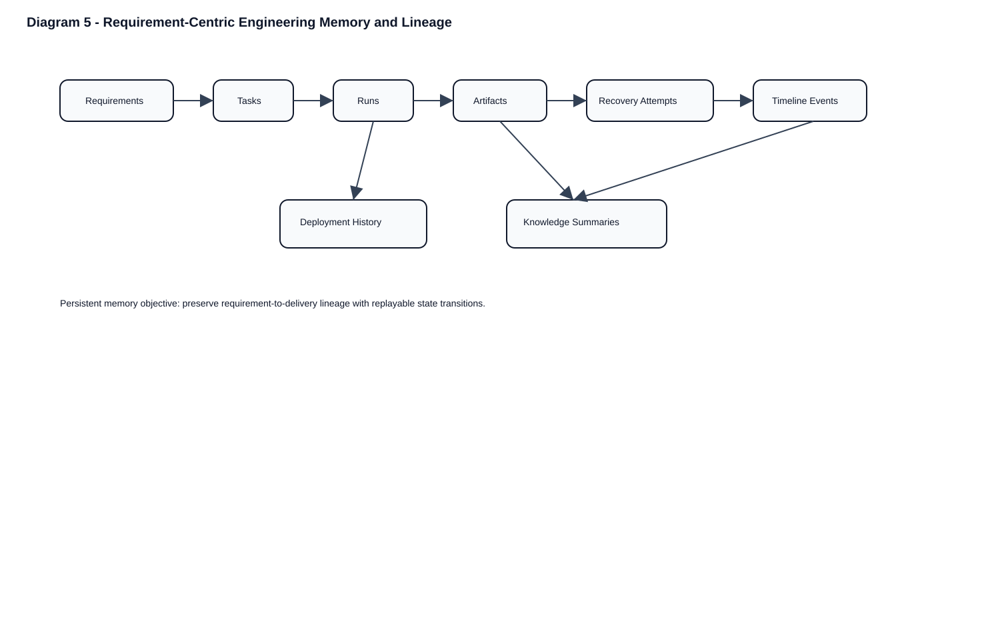

Autonomous, governed software delivery platform with persistent engineering memory and bounded execution.





| Capability | Traditional CI/CD | AI Coding Assistants | Proposed System |
|---|---|---|---|
| Multi-agent execution | Limited | Mostly single-agent/session | DAG work-items across planner/code/test/review roles |
| Autonomous recovery | Basic rerun/retry | Manual prompt retry | Failure-class policy + bounded retries |
| Context ranking | Minimal | Ad hoc | Scored ranking + top-k bounded pack |
| Requirement lineage | Weak | Often absent | Requirement-linked tasks/runs/artifacts/memory |
| Governance enforcement | Static checks | Limited | Patch guard + contract + budget controls |
| Runtime memory | Log-centric | Session-centric | Persistent replayable engineering memory |
| Deployment safety | Pipeline-dependent | Not core | Validation-gated delivery with escalation |
| Validation orchestration | Deterministic scripts | User-driven | Stage-aware validation and recovery checkpoints |
| Metric | Description | Purpose |
|---|---|---|
| Patch success rate | Accepted mutation attempts ratio | Reliability |
| Recovery success rate | Successful repair attempts ratio | Repair effectiveness |
| Time-to-green | Run start to passing validation | Velocity |
| Validation pass rate | Pass ratio at validation gates | Quality |
| Average retries | Mean retries per run/work-item | Stability signal |
| Context efficiency ratio | Selected context / loaded context | Context discipline |
| Safe-change success rate | Scoped changes completed without policy violations | Governed autonomy |
| Budget utilization | Consumed budget vs configured limit | Bounded execution |
Open full versions from links above for dataset sources, agent responsibilities, and technology stack.
Place UI captures at:
../screenshots/mission_control_view.png and ../screenshots/requirements_view.png
Then add image tags in this file if you want inline preview.
{kind=link}
{kind=link}
{kind=link}
{kind=link}
{kind=link}